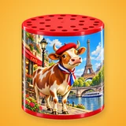
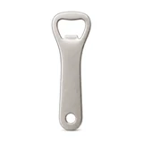
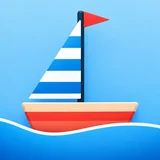

Florian Marcel
Développeur indépendant, je crée des applications iPhone simples et gratuites : petits jeux, jouets qui réagissent au souffle ou au mouvement, et outils pratiques. Sans compte, sans collecte de données.
CountedTime
Ta vie en semaines, en widget
Souffly
Souffle sur des bougies d'anniversaire

MeuhBox
Retourne ton téléphone, il meugle

PhoneOpener
Décapsule et collectionne

TiltBoat
Ton bateau qui tangue au tilt
Weave
Esquive le trafic à moto
CornAll
Compteur de points cornhole & tournois
BonneDateMétéo
Choisir sa date selon la météo historique
CountIt
Carnet intime privé & prévention
Des apps qui jouent avec ton téléphone
Chaque application exploite un capteur de l'iPhone d'une façon inattendue : le micro pour éteindre des bougies d'anniversaire virtuelles, l'accéléromètre pour faire meugler une boîte à meuh ou tanguer un petit bateau. À côté des jouets, des outils du quotidien : compter les points au cornhole, choisir la date d'un mariage selon la météo historique ou tenir un carnet intime chiffré. Et pour prendre du recul : ta vie en semaines, avec le temps qui reste en direct dans un widget.
Toutes les apps sont gratuites, fonctionnent sans inscription et gardent tes données sur ton téléphone.